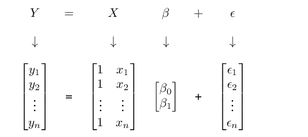

Worksheet Week 4
Self-Assessment Questions7
- How does OLS fit the regression line?
- Why do we have to square the residuals for OLS?
- What are the advantages of working with matrices in regression analysis?
- Explain the concept of an identity matrix.
Please stop here and don’t go beyond this point until we have compared notes on your answers.
Regression – Calculations
Consider the following data set:

- Plot the data in Table \(\ref{tbl:data1}\) in a suitable scatter plot.
- Fit a line of best fit through the scatterplot.
- Assuming a regression model of the type \(Y_{i}=\beta_{0}+ \beta_{1}X_{i}+\epsilon_{i}\), calculate the estimators for \(\beta_{0}\) and \(\beta_{1}\).
- Calculate the regression coefficients \(\beta_{0}\) and \(\beta_{1}\) using matrices.
- Specify the SRF and interpret the estimators of \(\beta_{0}\) and \(\beta_{1}\).
Regression in R
- Load the data set from Excel.
- Run the regression in R as follows:
regression <- lm(income ~ age, data = incomedata)
summary(regression)
Call:
lm(formula = income ~ age, data = incomedata)
Residuals:
Min 1Q Median 3Q Max
-652.25 -102.92 6.53 142.21 584.39
Coefficients:
Estimate Std. Error t value Pr(>|t|)
(Intercept) -53.092 304.716 -0.174 0.866011
age 39.695 7.325 5.419 0.000631 ***
---
Signif. codes: 0 '***' 0.001 '**' 0.01 '*' 0.05 '.' 0.1 ' ' 1
Residual standard error: 335.3 on 8 degrees of freedom
Multiple R-squared: 0.7859, Adjusted R-squared: 0.7592
F-statistic: 29.37 on 1 and 8 DF, p-value: 0.0006314- Check your results from the first section.
- Interpret the coefficients.
Solutions
You can find the Solutions in the Downloads Section.
Some of the content of this worksheet is taken from .↩︎